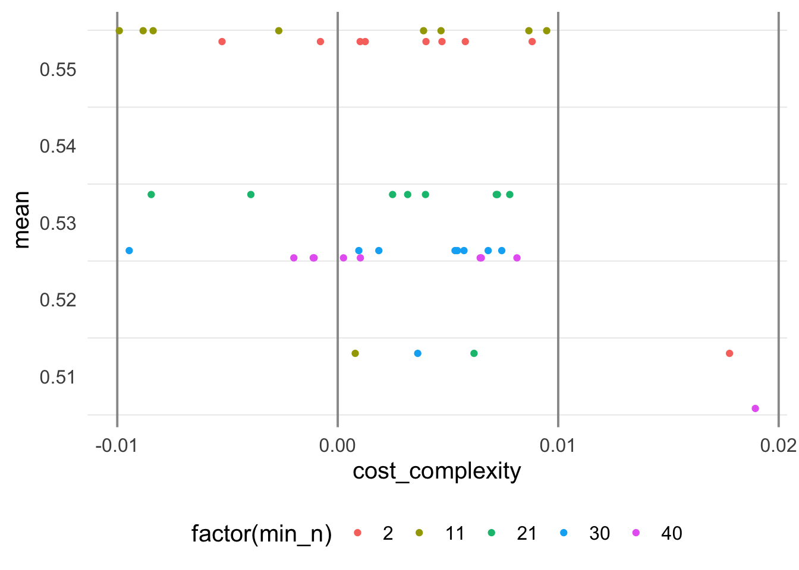
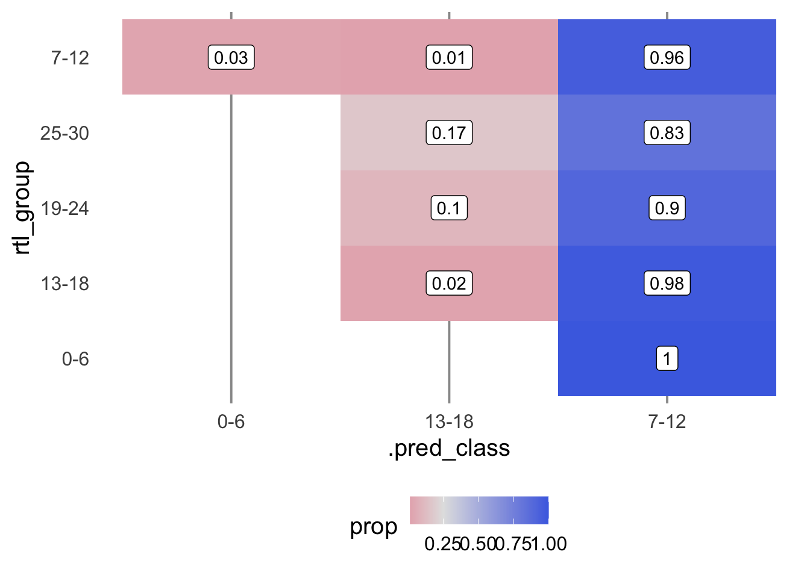
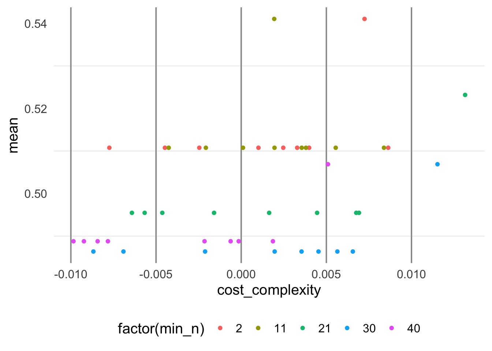
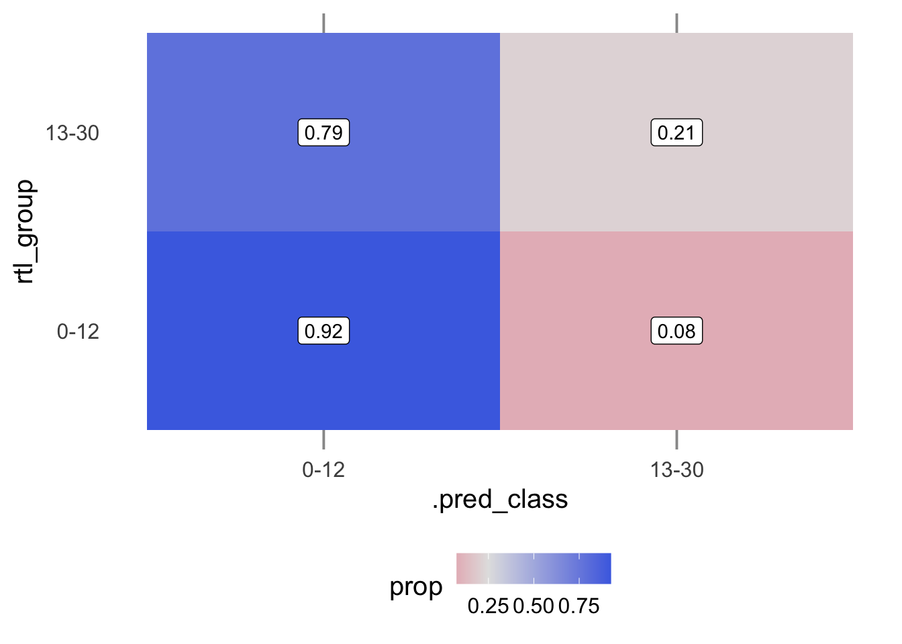

Decision Tree
Model with Five RTL Group Levels
Metrics
The produced model has very low sensitivity and descent specificity.
## # A tibble: 10 × 7
## # Groups: .metric [2]
## id cost_complexity min_n .metric .estimator .estimate .config
## <chr> <dbl> <int> <chr> <chr> <dbl> <chr>
## 1 Fold07 0.0000000001 30 sens macro 0.267 Preprocessor1_Mode…
## 2 Fold07 0.000000001 30 sens macro 0.267 Preprocessor1_Mode…
## 3 Fold07 0.00000001 30 sens macro 0.267 Preprocessor1_Mode…
## 4 Fold07 0.0000001 30 sens macro 0.267 Preprocessor1_Mode…
## 5 Fold07 0.000001 30 sens macro 0.267 Preprocessor1_Mode…
## 6 Fold07 0.0000000001 2 spec macro 0.827 Preprocessor1_Mode…
## 7 Fold07 0.000000001 2 spec macro 0.827 Preprocessor1_Mode…
## 8 Fold07 0.00000001 2 spec macro 0.827 Preprocessor1_Mode…
## 9 Fold07 0.0000001 2 spec macro 0.827 Preprocessor1_Mode…
## 10 Fold07 0.000001 2 spec macro 0.827 Preprocessor1_Mode…ROC Plot

ROC Value
The best ROC value of the model is 0.555, which corresponds to a weak model that cannot classify observations with consistency.
## # A tibble: 5 × 8
## cost_complexity min_n .metric .estimator mean n std_err .config
## <dbl> <int> <chr> <chr> <dbl> <int> <dbl> <chr>
## 1 0.0000000001 11 roc_auc hand_till 0.555 10 0.0154 Preprocessor1_Mo…
## 2 0.000000001 11 roc_auc hand_till 0.555 10 0.0154 Preprocessor1_Mo…
## 3 0.00000001 11 roc_auc hand_till 0.555 10 0.0154 Preprocessor1_Mo…
## 4 0.0000001 11 roc_auc hand_till 0.555 10 0.0154 Preprocessor1_Mo…
## 5 0.000001 11 roc_auc hand_till 0.555 10 0.0154 Preprocessor1_Mo…Model Tuning ROC
With adjustments to the model, the ROC remains at 0.555, indicating that the model is accurately classifying with 50% accuracy - not a strong trade-off between true positive rate and false positive rate
## # A tibble: 1 × 7
## min_n .metric .estimator mean n std_err .config
## <int> <chr> <chr> <dbl> <int> <dbl> <chr>
## 1 11 roc_auc hand_till 0.555 10 0.0154 Preprocessor1_Model02Model Metrics on Test Fit
## [[1]]
## # A tibble: 5 × 4
## .metric .estimator .estimate .config
## <chr> <chr> <dbl> <chr>
## 1 sens macro 0.196 Preprocessor1_Model1
## 2 spec macro 0.799 Preprocessor1_Model1
## 3 accuracy multiclass 0.366 Preprocessor1_Model1
## 4 bal_accuracy macro 0.497 Preprocessor1_Model1
## 5 roc_auc hand_till 0.550 Preprocessor1_Model1Model Predictions
## # A tibble: 10 × 4
## # Groups: rtl_group [5]
## .pred_class rtl_group n prop
## <fct> <fct> <int> <dbl>
## 1 0-6 7-12 2 0.0278
## 2 13-18 13-18 1 0.0213
## 3 13-18 19-24 3 0.1
## 4 13-18 25-30 1 0.167
## 5 13-18 7-12 1 0.0139
## 6 7-12 0-6 36 1
## 7 7-12 13-18 46 0.979
## 8 7-12 19-24 27 0.9
## 9 7-12 25-30 5 0.833
## 10 7-12 7-12 69 0.958Predictions Plot

Model with Five RTL Group Levels
Metrics
The model appears to be very sensitive but specificity is significantly reduced
## # A tibble: 10 × 7
## # Groups: .metric [2]
## id cost_complexity min_n .metric .estimator .estimate .config
## <chr> <dbl> <int> <chr> <chr> <dbl> <chr>
## 1 Fold01 0.01 2 sens binary 1 Preprocessor1_Mode…
## 2 Fold01 0.1 2 sens binary 1 Preprocessor1_Mode…
## 3 Fold01 0.01 11 sens binary 1 Preprocessor1_Mode…
## 4 Fold01 0.1 11 sens binary 1 Preprocessor1_Mode…
## 5 Fold01 0.01 21 sens binary 1 Preprocessor1_Mode…
## 6 Fold09 0.0000000001 2 spec binary 0.182 Preprocessor1_Mode…
## 7 Fold09 0.000000001 2 spec binary 0.182 Preprocessor1_Mode…
## 8 Fold09 0.00000001 2 spec binary 0.182 Preprocessor1_Mode…
## 9 Fold09 0.0000001 2 spec binary 0.182 Preprocessor1_Mode…
## 10 Fold09 0.000001 2 spec binary 0.182 Preprocessor1_Mode…ROC Plot

ROC Value
The best ROC value of the model is 0.54, which corresponds to a weak model that cannot classify observations with consistency. Reducing RTL variable to two groups did not seem to help much.
## # A tibble: 5 × 8
## cost_complexity min_n .metric .estimator mean n std_err .config
## <dbl> <int> <chr> <chr> <dbl> <int> <dbl> <chr>
## 1 0.01 2 roc_auc binary 0.541 10 0.00738 Preprocessor1_Mo…
## 2 0.01 11 roc_auc binary 0.541 10 0.00738 Preprocessor1_Mo…
## 3 0.01 21 roc_auc binary 0.523 10 0.0139 Preprocessor1_Mo…
## 4 0.0000000001 2 roc_auc binary 0.511 10 0.0151 Preprocessor1_Mo…
## 5 0.000000001 2 roc_auc binary 0.511 10 0.0151 Preprocessor1_Mo…Model Tuning ROC
Similar to the first model attempt, adjustments to the model keep the ROC at 0.555.
## # A tibble: 1 × 7
## min_n .metric .estimator mean n std_err .config
## <int> <chr> <chr> <dbl> <int> <dbl> <chr>
## 1 11 roc_auc hand_till 0.555 10 0.0154 Preprocessor1_Model02Model Metrics on Test Fit
## [[1]]
## # A tibble: 5 × 4
## .metric .estimator .estimate .config
## <chr> <chr> <dbl> <chr>
## 1 sens binary 0.925 Preprocessor1_Model1
## 2 spec binary 0.214 Preprocessor1_Model1
## 3 accuracy binary 0.611 Preprocessor1_Model1
## 4 bal_accuracy binary 0.569 Preprocessor1_Model1
## 5 roc_auc binary 0.525 Preprocessor1_Model1Model Predictions
## # A tibble: 4 × 4
## # Groups: rtl_group [2]
## .pred_class rtl_group n prop
## <fct> <fct> <int> <dbl>
## 1 0-12 0-12 98 0.925
## 2 0-12 13-30 66 0.786
## 3 13-30 0-12 8 0.0755
## 4 13-30 13-30 18 0.214Predictions Plot
